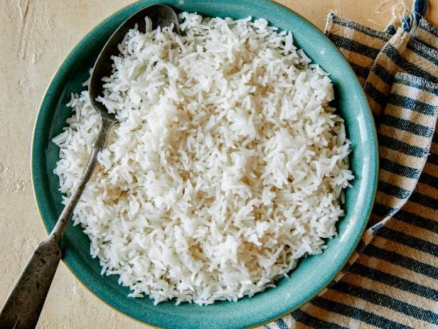

Basmati Rice
Odin Recipes

Description
This Middle Eastern Basmati Rice recipe is easy to make from home, it's the easiest and quickest recipe to follow. From the
light and fresh flavors, you'll be sure to find yourself going back for seconds!
Ingredients:
- 2 tablespoons of olive oil
- 1 onion, finely chopped
- 1 garlic clove, crushed
- 2 cups of basmati rice
- 2 teaspoons chicken stock powder
- 2 tablespoons lemon rind, grated
- cup parsley, chopped
- black pepper, to taste
- boiling water
Steps:
- Heat oil & saute onion & garlic until tender, stir in rice.
- Add boiling water until pan is 3/4 full. Bring to boil, stirring.
- Stir in stock & rapid boil for 10-12 mins or until tender, drain well.
- Return to pan adding lemon rind, parsley & pepper, toss well to combine.